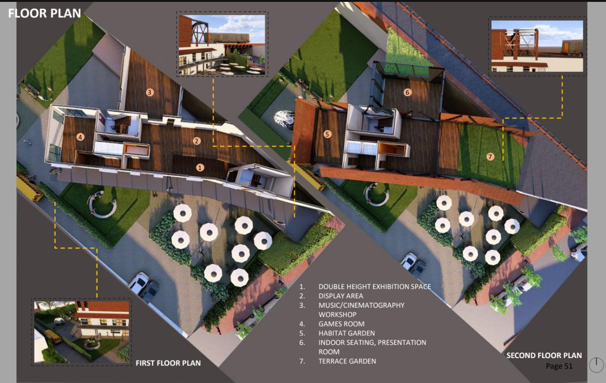
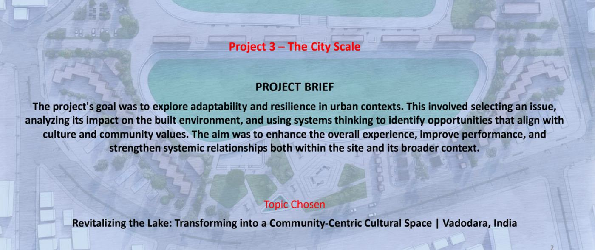
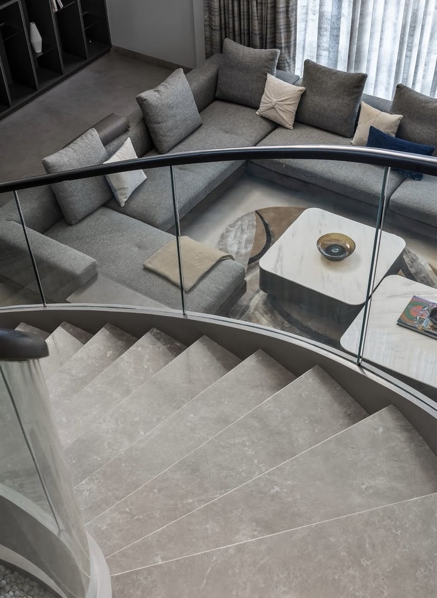
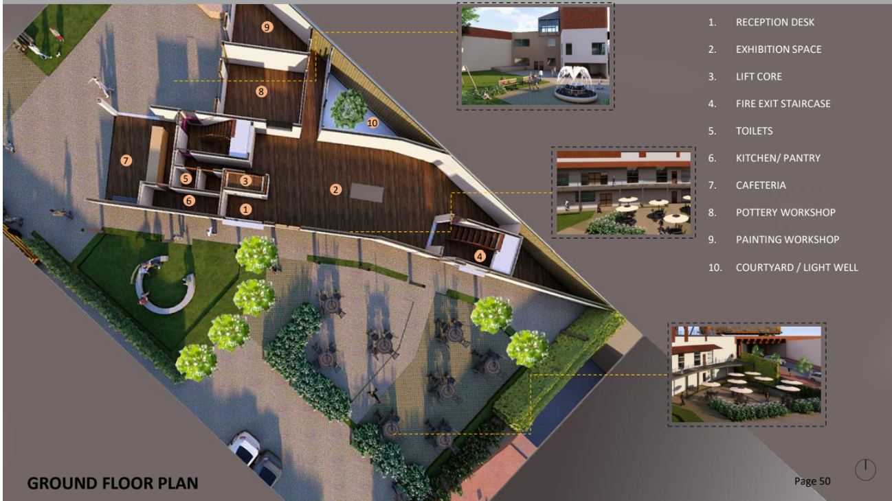
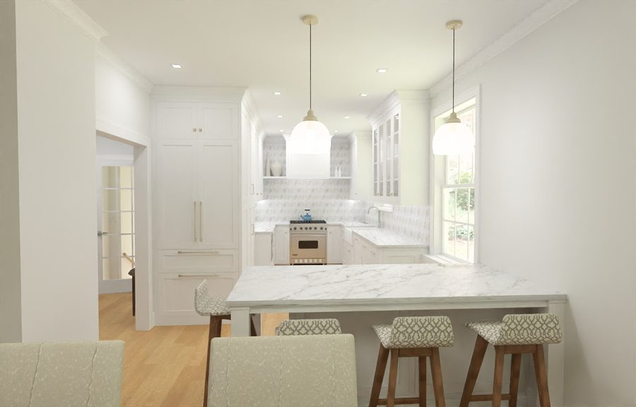

01Revitalizing the Lake — The City Scale
A community-centric cultural space transforming an urban lakefront in Vadodara, India. The studio brief asked us to explore adaptability and resilience in urban contexts, using systems thinking to identify opportunities aligned with local culture and community values. The masterplan strengthens civic life across twin lakes with food plazas, an amphitheatre, riverfront seating, an open event space, and authorized waterfront kiosks.





